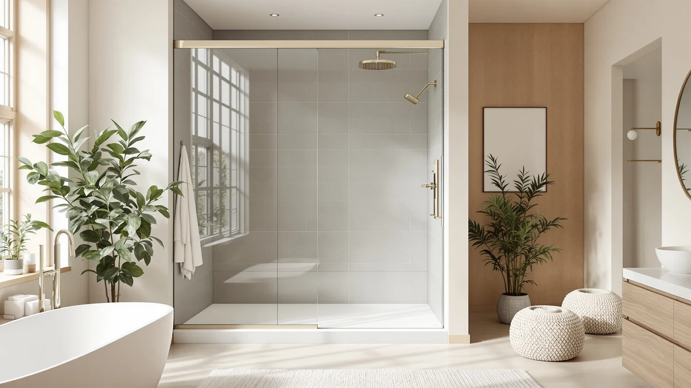

Shower Door vs Panel (2026)
Prices and picks verified as of August 2026. Independent, reader-supported reviews.


Things to Know Before You Buy
- A shower door seals the entire opening, while a shower panel usually guards one side of a tub or walk-in shower, which is the core tradeoff in the shower door vs panel decision.
- Panels install with a single wall bracket or hinge, so they're faster and cheaper to put in than a full sliding or pivot door system.
- Full shower doors, framed or frameless, run $229 to $450 in this guide, while a panel is usually the lower-cost option for a tub-shower combo.
- Frameless doors use thicker tempered glass and no metal border, so they cost more but hold up better cosmetically over years of daily use.
- A panel makes more sense for a rental or a bathroom with a tight footprint, since it needs no track and takes up less space when open.
The shower door vs panel decision usually comes down to how much of the shower opening you need to close off, not which option looks nicer in a catalog photo. A shower door, whether it slides, pivots, or hinges, seals the entire opening with a frame or track system, while a shower panel is generally a single fixed pane that guards against splashing on a tub or one side of a walk-in shower without full enclosure.
We compared build materials, hardware, pricing, and verified owner reviews across sliding shower doors, framed enclosures, and single-panel setups to show where each format earns its keep. Neither option is universally better: your existing tub or shower base, your bathroom layout, and how much water containment you actually need decide the winner more than brand or finish.
Quick Answer
For most walk-in showers, a full shower door such as the ELEGANT Framed Sliding Shower Enclosure is the better long-term choice, since it seals the entire opening and keeps water off the floor no matter how the spray moves. Choose a shower panel instead if you're updating a tub-shower combo on a budget or renting, since a single fixed panel installs faster and costs less without replacing the whole tub surround. In the shower door vs panel comparison, the door wins on containment and the panel wins on price and install speed.
What is Shower Door?
A shower door is a glass panel system, sliding, pivot, or hinged, mounted inside a frame or track that seals off the entire shower opening. Framed doors use aluminum channels around every edge of the glass, which adds structural support and keeps costs down, as with the ELEGANT Framed Sliding Shower Enclosure in this guide. Frameless doors, like the option from Aurisal, drop the metal border around the glass and rely on thicker tempered glass, usually 3/8 inch, plus heavy-duty hinges or rollers, for a cleaner look that costs more.
Sliding shower doors run on an overhead track and work well for narrow bathrooms where a swinging door would hit the sink or toilet. Pivot and hinged doors need floor clearance to open but seal the gap between door and frame more tightly, since there's no track channel for water to sit in. Multi-panel sliding doors, such as the Bathlink 3-panel model here, split the opening into two or three glass sections that overlap on parallel tracks, which lets you cover a wider opening than a single sliding panel could span on its own.
Whichever style you pick, a shower door closes off the shower on every side, which is the main reason it beats a panel on full water containment in the shower door vs panel comparison.
What is Panel?
A shower panel is a single fixed or pivoting pane of tempered glass or acrylic that guards one open side of a shower or tub, rather than enclosing the entire opening. It's the format you'll see most often on a tub-shower combo, where a full door system isn't practical because the tub itself already blocks most splashing from three sides. A panel usually mounts with a single wall bracket or a short hinge, so installation involves one connection point instead of the multiple tracks, rollers, and seals a full door needs.
Because a panel covers only part of the opening, usually the section nearest the showerhead, some water can still escape around the open edge during a longer shower or if someone showers at an angle. That tradeoff is deliberate: panels exist for bathrooms where a full enclosure doesn't fit the layout, budget, or rental terms, not as a lesser version of a shower door. Many panels pivot outward for easier cleaning and tub access, a convenience full sliding doors don't offer since their tracks stay fixed in place.
For anyone weighing shower door vs panel options on a tub combo specifically, a panel is often the more practical starting point, even though it won't match a full door's containment.
Head-to-Head: Build Quality & Durability
Build quality between the two formats comes down to glass thickness and hardware, not which category you pick. Full shower doors in this guide, including the KPUY frameless model, use 3/8-inch tempered glass and stainless steel or aluminum tracks rated for daily sliding or swinging. That hardware sees more wear over time than a panel's single hinge or bracket, since rollers and tracks collect mineral buildup from hard water and need occasional cleaning to keep gliding smoothly.
A shower panel, with one mounting point and no track, has fewer moving parts to fail. There's no roller to replace and no channel where grime and mildew can collect along the base, which is a common complaint with framed sliding doors after a few years of use. On the other hand, a door's frame or track adds structural rigidity that a single panel doesn't have, so panels are more prone to wobble at the top if you don't anchor the wall bracket into a stud.
Reviewers consistently note that frameless doors, like the Aurisal stainless steel model, hold up better cosmetically since there's no painted or anodized frame to chip. In the shower door vs panel durability comparison, doors win on structural rigidity and panels win on simplicity, since less hardware means less to maintain.
Head-to-Head: Price & Value
Price splits clearly along category lines. Among the products compared here, full shower doors range from $374.99 for the ELEGANT Framed Sliding Shower Enclosure up to $449.96 for the KPUY frameless door, with frameless options landing near the top of that range because of the thicker glass and heavier hardware. A single shower panel costs less than any full door in this guide, since you're paying for one pane and one mounting bracket instead of a frame, track, and multiple glass sections.
Installation cost follows the same pattern if you're hiring a contractor: a panel's single hinge point takes less labor than leveling and sealing a full track system. For a bathroom on a tight budget, a panel is the cheaper way to add water containment, while a full shower door is the better investment if you're planning to stay in the home and want the setup to last through a full remodel cycle.
Head-to-Head: Use Experience
Day to day, a full shower door changes how you enter and exit the shower more than a panel does. Sliding doors like the Bathlink 3-panel model require you to slide a section along the track, which some owners find slower than stepping past a pivoting panel, but the tradeoff is a fully sealed opening that keeps steam and water inside during a normal shower. Pivot and hinged doors need floor clearance to swing open, which matters if your bathroom layout is tight around the shower entrance.
A shower panel opens with a single push or pivot, so getting in and out takes one motion instead of sliding along a track. That convenience comes with less water containment, since the open side of a tub-shower combo is still exposed to spray, especially with a handheld showerhead angled toward the room. Owners of panel setups report needing a bath mat nearby more often than owners of full sliding doors, simply because more overspray reaches the floor.
Cleaning also differs: doors with tracks need periodic wiping to clear soap scum from the channel, while a single panel has one pane and one hinge to wipe down. In the shower door vs panel daily-use comparison, panels win on ease of entry and cleaning, and doors win on keeping water where it belongs.
When to Choose Shower Door
Choose a full shower door if you have a walk-in shower without a tub, since there's no other barrier to keep water contained and a door is doing all the work. It's also the better call if you shower daily and want to avoid mopping the floor afterward, or if you're renovating and want the setup to last years without replacing hardware. A frameless door, like the Aurisal model, suits a modern bathroom where you want the glass to read as one continuous surface. A framed sliding door, such as the ELEGANT enclosure, is the more budget-friendly way to get full containment in a narrower bathroom where a swinging door wouldn't clear the room. If you're building or fully remodeling rather than doing a quick refresh, a shower door is the pick that matches a permanent renovation.
When to Choose Panel
Choose a shower panel if you have a tub-shower combo and want to add splash protection without replacing the tub or installing a full track system. It's the practical option for a rental, where a permanent door installation isn't allowed or worth an investment you won't recoup. A panel also makes sense for a guest bathroom or secondary shower that sees occasional use, where full containment matters less than keeping the install simple and affordable. If your bathroom has a tight footprint and a sliding door's track would eat into usable space, a pivoting panel takes up less room when open. For anyone comparing shower door vs panel costs on a quick bathroom update, a panel gets you most of the water protection for a fraction of the price and install time.
Our Top Picks
If you're leaning toward a full shower door after weighing the shower door vs panel tradeoffs above, these three are worth a closer look, ranked from best all-around value to premium build.

Editor’s Pick
ELEGANT Framed Sliding Shower Enclosure
A framed sliding enclosure that seals a walk-in shower fully without the cost of a frameless upgrade.
$374.99
Check Price on Amazon
Best Value
Bathlink 42"x78" 3-Panel Shower Sliding
Three overlapping panels cover a wider opening than a single sliding door, at a price close to the framed option.
$399.99
Check Price on Amazon
Premium Choice
ELEGANT Showers 46.5 in.- 48
A polished frameless-style finish and a 46.5 to 48 inch adjustable span make this the pick for a premium look on a mid-size tub-shower opening.
$229.49
Check Price on AmazonFrequently Asked Questions
Is a shower door or shower panel better?
Neither wins outright. A full shower door seals the entire opening and keeps more water off the floor, while a shower panel costs less and installs faster on a tub-shower combo. The shower door vs panel decision depends on whether you have a walk-in shower or a tub, and how much you want to spend.
Can I replace a shower panel with a full shower door?
Usually yes, as long as your tub or shower base has enough clearance for a track or frame. You may need to patch or re-tile where the panel's single bracket was mounted, since a full door's frame or track covers a different footprint along the wall.
Do shower panels leak more than shower doors?
A panel can let more water escape around its open edge, especially on a tub-shower combo with a handheld showerhead, since it doesn't seal the full opening the way a door does. A full shower door contains spray on every side, which is the main reason owners upgrade from a panel to a door over time.
Which is easier to install, a shower door or a shower panel?
A shower panel is easier to install, since it needs one wall bracket or hinge instead of a full track and multiple glass sections. A full shower door, whether sliding, pivot, or hinged, takes longer to level, seal, and align, especially frameless models that rely on heavier glass and hardware.
Is a frameless shower door worth the extra cost over a panel?
It depends on how long you plan to stay in the home. A frameless shower door costs more upfront than a panel, but reviewers consistently note it holds up better cosmetically and provides full containment, which pays off over years of daily use. For a rental or short-term update, a panel is usually the more practical choice.
Final Verdict
The shower door vs panel decision comes down to your shower layout more than which option is objectively better. If you have a walk-in shower and want full containment, a framed sliding door like the ELEGANT Framed Sliding Shower Enclosure is the safer long-term investment. If you're updating a tub-shower combo on a budget, a single panel gets you most of the water protection for a fraction of the price and install time.